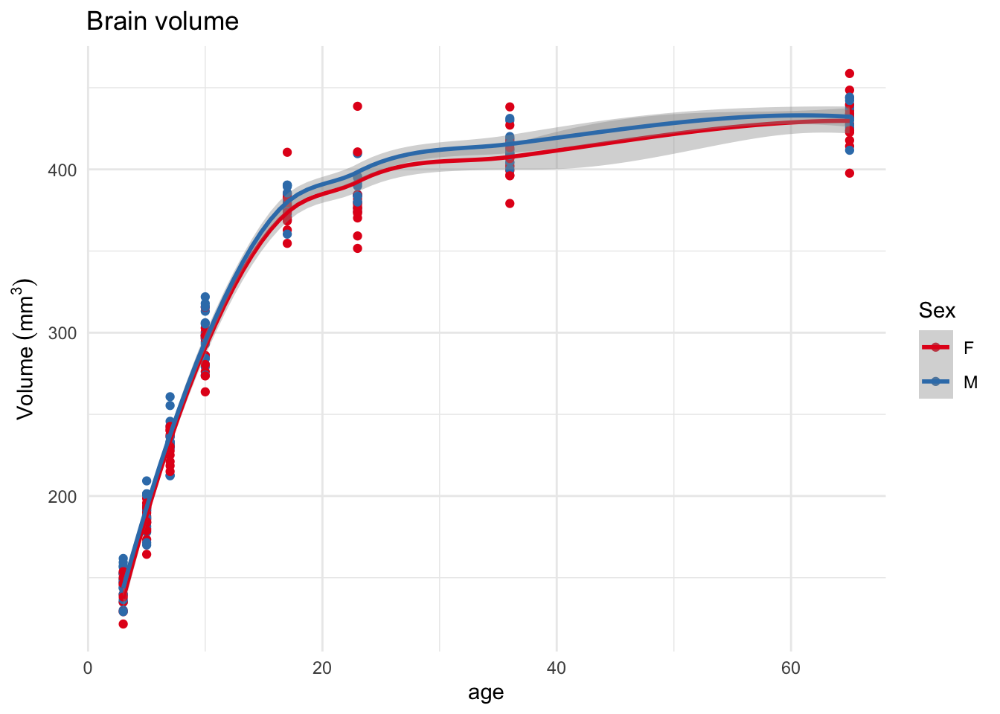
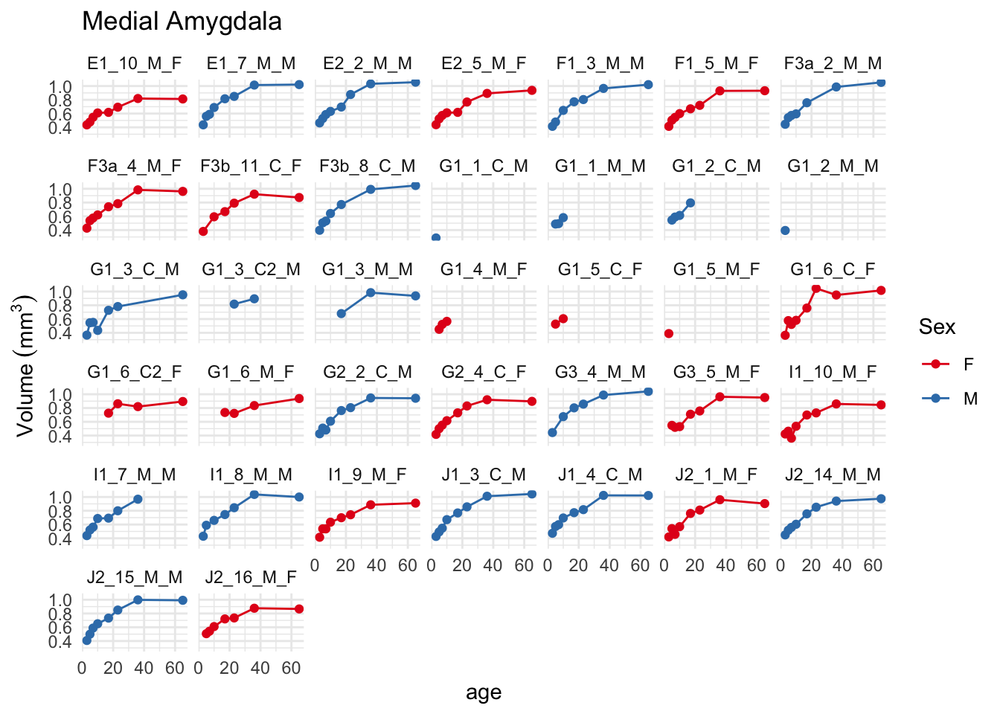
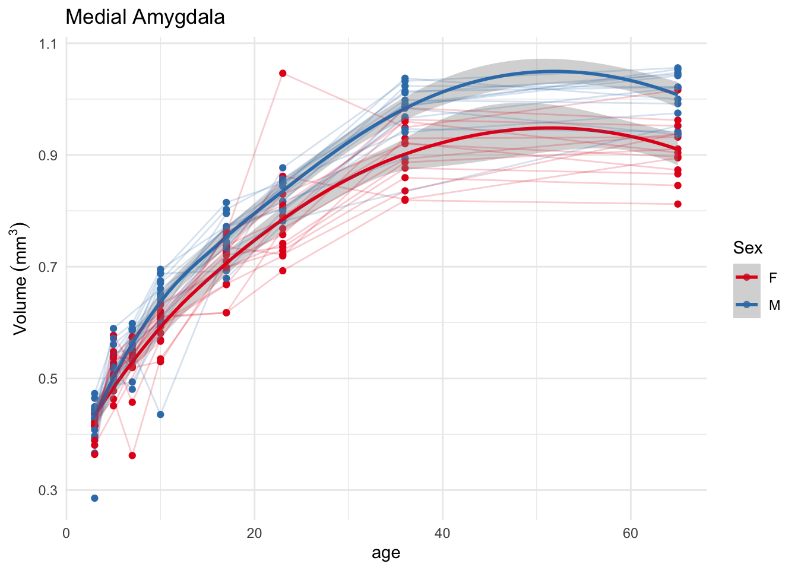
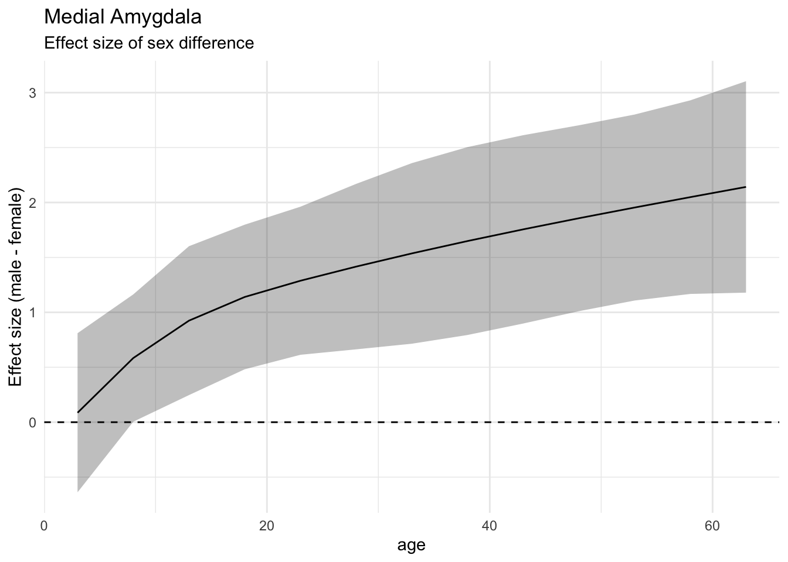

How to deal with longitudinal brain development data
R
longitudinal
Author
Jason Lerch
Published
November 26, 2023
Longitudinal data provides its own set of modelling challenges. These primarily concern how to model time, especially if there is a curvilinear relationship between time and variable(s) of interest. A related issue is making statistical models not only fit the data well but also produce interpretable output that helps address questions of changes in baseline alongside changes in trajectories.
This will be a series of posts, exploring:
Plotting of longitudinal data
Fitting straight lines and interpreting slopes and intercepts
Fitting curves via splines
Comparisons between different fitted models for ease of interpretation
Segmented models
General additive models
Random intercepts and random slopes
Bayesian linear models
RMINC and data.tree methods to explore all these across the brain
For this first post we’ll look at points 1-4 with small bits of RMINC and data.tree creeping in.
To explore these questions we will use data being collected by Tiffany Chien, where she is looking at the effect of maternal auto-antibodies on brain development in mice. Each mouse was imaged at eight different timepoints, following a pattern set here and first developed here. We begin by loading the data as provided by Tiffany:
This contains 5 items - the anatomy and labels volumes, the dataframe describing each scan (gf), a matrix of structure volumes (structvols), and the label definitions (hdefs).
We can then add the volumes to the hierarchical anatomy, since anatomical hierarchies are awesome.
library(RMINC)# the suppress warnings bit deals with a comparison in the data.tree# library that throws far too many warnings.hvols <-suppressWarnings(addVolumesToHierarchy(hdefs, structvols))
Let’s start with overall brain volumes
gf$brainVols <- hvols$volumes
And plot them, initially by sex, since we have some decently strong expectations of the development of sex differences in the brain.
library(tidyverse)library(ggplot2)# set some defaults for ggplots for the rest of the documenttheme_set(theme_minimal())scale_colour_brewer_d <-function(...) {scale_colour_brewer(palette ="Set1", ...)}options(ggplot2.discrete.colour=scale_colour_brewer_d)ggplot(gf) +aes(x=age, y=brainVols, colour=Sex) +geom_point() +geom_smooth() +ylab(bquote(Volume ~ (mm^3))) +ggtitle("Brain volume")
`geom_smooth()` using method = 'loess' and formula = 'y ~ x'

This is a fairly standard ggplot plot. geom_smooth does a lot of the heavy lifting here. By default it uses a local estimator (loess) to fit the curve; these are great for visualization but not so useful for analyses. It also shows a clear overall pattern of rapid growth in brain volume until around day 20, followed by slower growth.
Brain volume does not appear particularly different by sex, which is what we have seen before. Since we are looking at sex let’s pick a classically dimorphic brain structure
`geom_smooth()` using method = 'loess' and formula = 'y ~ x'
OK, we have sensible patterns, showing larger volumes of the medial amygdala in males, seemingly emerging over the first few days of life. Let’s improve the plot a little bit to let us see what happens to individual mice. First, let’s plot each mouse entirely separately.
`geom_line()`: Each group consists of only one observation.
ℹ Do you need to adjust the group aesthetic?
`geom_line()`: Each group consists of only one observation.
ℹ Do you need to adjust the group aesthetic?
`geom_line()`: Each group consists of only one observation.
ℹ Do you need to adjust the group aesthetic?

Note that I’ve replaced the fitting (geom_smooth) with a simpler line (geom_line). A few features immediately stand out from this plot: quite a few mice only have a few data points, which is primarily due to data collection being ongoing, and there are too many mice for this plot to be terribly useful. Let’s instead plot separate lines on the same plot as before:
`geom_smooth()` using method = 'loess' and formula = 'y ~ x'

Not always clear how useful such a plot is, but it sure is pretty. Note that the geom_line bit needed to have the group specified in order for ggplot to know which points to join up with lines.
On to statistics. For the sake of argument let’s go with the simplest model of volume against age by sex:
suppressMessages(library(lmerTest))# create a new variable for the medial amygdala for easier accessgf <- gf %>%mutate(MeA =FindNode(hvols, "Medial amygdalar nucleus")$volumes)# run the linear mixed effects model.summary(lmer(MeA ~ age * Sex + (1|subject_id), gf))
boundary (singular) fit: see help('isSingular')
Linear mixed model fit by REML. t-tests use Satterthwaite's method [
lmerModLmerTest]
Formula: MeA ~ age * Sex + (1 | subject_id)
Data: gf
REML criterion at convergence: -362.9
Scaled residuals:
Min 1Q Median 3Q Max
-2.6383 -0.7678 0.0283 0.7920 3.6123
Random effects:
Groups Name Variance Std.Dev.
subject_id (Intercept) 0.000000 0.0000
Residual 0.009781 0.0989
Number of obs: 224, groups: subject_id, 37
Fixed effects:
Estimate Std. Error df t value Pr(>|t|)
(Intercept) 5.125e-01 1.425e-02 2.200e+02 35.967 <2e-16 ***
age 7.674e-03 4.859e-04 2.200e+02 15.794 <2e-16 ***
SexM 5.855e-03 1.942e-02 2.200e+02 0.302 0.7633
age:SexM 1.717e-03 6.762e-04 2.200e+02 2.539 0.0118 *
---
Signif. codes: 0 '***' 0.001 '**' 0.01 '*' 0.05 '.' 0.1 ' ' 1
Correlation of Fixed Effects:
(Intr) age SexM
age -0.739
SexM -0.734 0.542
age:SexM 0.531 -0.719 -0.731
optimizer (nloptwrap) convergence code: 0 (OK)
boundary (singular) fit: see help('isSingular')
Here we use a linear mixed effects model. These models are the bread and butter of longitudinal analyses, as they allow you to account for the dependence created by having multiple datapoints from the same subject. There are multiple ways to specify these models, with the main decisions revolving around what fixed effects and what random effects to use. Fixed effects are what you would use in any old linear model; here we specify an age by sex interaction. Random effects, the bits inside the parentheses, determine how to treat the individual mice in this dataset. Here we use the simplest formula, (1 | id), which allows every mouse to have a separate intercept but not a separate slope. I.e. at baseline mouse 1 can have a larger or smaller volume than mouse 2, but from then on the effect of age will be the same for all mice. We could allow for separate slopes too, a topic which we will explore in a future post.
We also get warnings about singular fits - these are due to no variance in the random intercept (i.e. the separate intercept per subject) being identified. This can be indicative of a real problem and the need to change the model formula, but in simple cases like this can be ignored for now.
Onto the results. Our model shows an effect of age and an age by sex interaction, but no effect of sex. Why is that? Two reasons:
We are fitting a straight line, where there clearly is a curve in the data
We are testing the effect of sex at age=0, which doesn’t make sense.
Let’s look at them in turn. Plotting as a straight line:
First, it’s evident that the model does not fit all that well, which is to be expected since we saw earlier that a straight line is not the right way to model age. Second, we can see the interaction - the lines are not parallel. Third, at age=0 the lines overlap.
Tackling the third point first, in a linear model with an interaction, each term of an interaction is interpreted at the zero point of the other term. Going back to the linear model output from above, it’s telling us that age=0 the females (the reference level of sex) have a volume of 5.125e-01 (the intercept), and males a volume of 5.125e-01 + 5.855e-03. If we change where the intercept falls we change these values. To whit, let’s test at an age of 65:
summary(lmer(MeA ~ age * Sex + (1|subject_id), gf %>%mutate(age = age-65)))
boundary (singular) fit: see help('isSingular')
Linear mixed model fit by REML. t-tests use Satterthwaite's method [
lmerModLmerTest]
Formula: MeA ~ age * Sex + (1 | subject_id)
Data: gf %>% mutate(age = age - 65)
REML criterion at convergence: -362.9
Scaled residuals:
Min 1Q Median 3Q Max
-2.6383 -0.7678 0.0283 0.7920 3.6123
Random effects:
Groups Name Variance Std.Dev.
subject_id (Intercept) 0.000000 0.0000
Residual 0.009781 0.0989
Number of obs: 224, groups: subject_id, 37
Fixed effects:
Estimate Std. Error df t value Pr(>|t|)
(Intercept) 1.011e+00 2.315e-02 2.200e+02 43.693 < 2e-16 ***
age 7.674e-03 4.859e-04 2.200e+02 15.794 < 2e-16 ***
SexM 1.175e-01 3.256e-02 2.200e+02 3.607 0.000383 ***
age:SexM 1.717e-03 6.762e-04 2.200e+02 2.539 0.011796 *
---
Signif. codes: 0 '***' 0.001 '**' 0.01 '*' 0.05 '.' 0.1 ' ' 1
Correlation of Fixed Effects:
(Intr) age SexM
age 0.910
SexM -0.711 -0.647
age:SexM -0.654 -0.719 0.914
optimizer (nloptwrap) convergence code: 0 (OK)
boundary (singular) fit: see help('isSingular')
I changed age by subtracting 65 from it, so now the intercept (age=0) is really age=65. Now the SexM term has become quite significant; look back at the plot above and see how the two lines diverge significantly at that age. At age 65 the females have a volume 1.01, and males 1.01 + 0.11.
Fitting curves in linear models
Now back to the fact that the data should not be fit with a straight line since there is a clearly detectable curve in the relation between volume and age. Let’s use a third order spline:
Here I changed the bit inside geom_smooth. First, using the method="lm" syntax I told it to use a linear model rather than a local estimator, and then I gave it the formula. The ns(age, 3) syntax tells it to use a natural spline with 3 degrees of freedom.
That fits pretty well. Let’s look at the model outputs
summary(lmer(MeA ~ns(age,3) * Sex + (1|subject_id), gf))
Now we have a much harder to interpret set of age terms (and their interactions). Each of the ns(age, 3)1 or ns(age, 3)2 or ns(age, 3)3 tells us about the parameters of the different spline terms. While these can obviously be used to reconstruct the fit, in practice they are essentially uninterpretable for figuring out where and how the age trajectories deviate by sex.
But looking at just the sex terms, it’s again insignificant at age=0. Let’s see at age 65.
summary(lmer(MeA ~ns(age,3) * Sex + (1|subject_id), gf %>%mutate(age=age-65)))
The model terms haven’t changed. So with splines we’ve lost the ability to interpret our data quite the way we want by moving the intercept; other spline parameterizations than natural splines can do better, and polynomials can do it very well, but ultimately we want a more general solution. The emmeans package to the rescue for estimated marginal means.
library(emmeans)l <-lmer(MeA ~ns(age,3) * Sex + (1|subject_id), gf)e <-emmeans(l, ~ Sex | age, at =list(age=c(7, 21, 65)))
First, we fitted a linear mixed effects model as before, and then we’ve computed the marginal means using the emmeans function from the package of the same name. The first argument is the model, then it’s the formula; here we tell it that we want to evaluate Sex across age. Next we tell the emmeans function to evaluate its output at 3 different ages - 7, 21, and 65. We can look at the output:
e
age = 7:
Sex emmean SE df lower.CL upper.CL
F 0.525 0.00863 56.6 0.508 0.543
M 0.547 0.00807 56.0 0.531 0.563
age = 21:
Sex emmean SE df lower.CL upper.CL
F 0.766 0.00908 65.2 0.748 0.784
M 0.820 0.00866 71.0 0.802 0.837
age = 65:
Sex emmean SE df lower.CL upper.CL
F 0.911 0.01320 172.9 0.885 0.937
M 1.006 0.01310 184.7 0.980 1.032
Degrees-of-freedom method: kenward-roger
Confidence level used: 0.95
This is already quite useful, as we can get the estimated means at those three ages for each sex, alongside their 95% confidence intervals. But we can go further and compute the differences at those ages explicitly:
pairs(e)
age = 7:
contrast estimate SE df t.ratio p.value
F - M -0.0216 0.0118 56.4 -1.832 0.0722
age = 21:
contrast estimate SE df t.ratio p.value
F - M -0.0538 0.0125 67.9 -4.289 0.0001
age = 65:
contrast estimate SE df t.ratio p.value
F - M -0.0951 0.0186 178.8 -5.115 <.0001
Degrees-of-freedom method: kenward-roger
We can tell from this output that sex differences are borderline at age 7, and become quite strikingly significant later. Note that the contrast is the reverse of what we would expect from our linear model; we can reverse that in turn:
pairs(e, reverse = T)
age = 7:
contrast estimate SE df t.ratio p.value
M - F 0.0216 0.0118 56.4 1.832 0.0722
age = 21:
contrast estimate SE df t.ratio p.value
M - F 0.0538 0.0125 67.9 4.289 0.0001
age = 65:
contrast estimate SE df t.ratio p.value
M - F 0.0951 0.0186 178.8 5.115 <.0001
Degrees-of-freedom method: kenward-roger
As a way of comparison, let’s get back to overall brain volume, which at least visually appeared to not differ much by sex:
l <-lmer(brainVols ~ns(age,3) * Sex + (1|subject_id), gf)(e <-emmeans(l, ~ Sex | age, at =list(age=c(7, 21, 65))))
age = 7:
Sex emmean SE df lower.CL upper.CL
F 236 2.65 46.4 231 242
M 242 2.48 47.1 237 247
age = 21:
Sex emmean SE df lower.CL upper.CL
F 380 2.75 51.4 374 385
M 385 2.59 55.0 380 390
age = 65:
Sex emmean SE df lower.CL upper.CL
F 428 3.58 122.2 421 435
M 431 3.51 138.1 424 438
Degrees-of-freedom method: kenward-roger
Confidence level used: 0.95
pairs(e, reverse = T)
age = 7:
contrast estimate SE df t.ratio p.value
M - F 5.64 3.63 46.7 1.554 0.1269
age = 21:
contrast estimate SE df t.ratio p.value
M - F 5.53 3.78 53.1 1.462 0.1495
age = 65:
contrast estimate SE df t.ratio p.value
M - F 2.92 5.01 129.8 0.583 0.5609
Degrees-of-freedom method: kenward-roger
And indeed the sex difference in brain volume is relatively uninteresting at those three ages.
Two more digressions with emmeans. First is computing effect sizes, measured as Cohen’s d:
l <-lmer(MeA ~ns(age,3) * Sex + (1|subject_id), gf)e <-emmeans(l, ~ Sex | age, at =list(age=c(7, 21, 65)))eff_size(e, sigma=sigma(l), edf=30)
age = 7:
contrast effect.size SE df lower.CL upper.CL
F - M -0.496 0.278 56.0 -1.05 0.0612
age = 21:
contrast effect.size SE df lower.CL upper.CL
F - M -1.233 0.329 65.2 -1.89 -0.5766
age = 65:
contrast effect.size SE df lower.CL upper.CL
F - M -2.179 0.510 172.9 -3.19 -1.1712
sigma used for effect sizes: 0.04366
Degrees-of-freedom method: inherited from kenward-roger when re-gridding
Confidence level used: 0.95
A few things to note:
The effect size function needs the model, the sigma from the linear mixed effects model, and the degrees of freedom of sigma, edf. This latter edf is very hard to define, which comes back to acknowledging that the confidence intervals around these effect sizes are going to be somewhat ill defined. Still useful, but keep that in mind.
The direction of the effect sizes has reversed again, and there appears to be no reverse=TRUE equivalent to what can be had in pairs.
One more digression on emmeans. Since the effects are conditional on the model, that means we can evaluate them at any age, not just those where we had scans. This in turn can be useful for visualizing the temporal evolution of your contrast differences. To wit:
library(broom)e <-emmeans(l, ~ Sex | age, at =list(age=seq(3, 65, by=5)))ef <-eff_size(e, sigma=sigma(l), edf=30)tidy(ef, conf.int = T) %>%ggplot() +aes(x=age, y=estimate*-1, ymin=conf.low*-1, ymax=conf.high*-1) +geom_ribbon(alpha=0.3) +geom_line() +geom_hline(yintercept =0, linetype=2) +ylab("Effect size (male - female)") +ggtitle("Medial Amygdala", subtitle ="Effect size of sex difference")

This shows the effect sizes of sex in the medial amygdala steadily increasing with age. (And note the multiplication by -1 to get the direction to be what we expected. Also note that we are using the tidy function from the broom package to get clean output from emmeans).
Using model comparisons
The downside of the emmeans approach is that one has to, in effect, test multiple different ages, which only makes sense when there are precise hypotheses. An alternate approach is to do a set of model comparisons to get at what we would normally think of as main effects. I.e. how much better does the model fit when we include sex? And do we need an interaction? Let’s test that:
Here we set up three different statistical models. The first, simpleAgeModel, has the third order spline for age but no mention of sex. This effectively becomes our null hypothesis - of course the brain will change with development, but it will not do so in any sex specific way. The second model, AgeAndSexModel, includes an additive effect for sex; this would allow for a separate offset by sex, but would keep the slopes between the medial amygdala and age the same for both sexes. The last model AgeAndSexInteractionModel, then also allows the age-relation to vary by sex. Once we’ve computed these three models we run a log-likelihood test between them using the anova function, which produces a chi-squared statistic and its associated p-value.
(Note that we fit all the models with REML=FALSE. This tells lmer to use maximum likelihood, rather than restricted maximum likelihoods as by default. This switch to maximum likelihood estimation is required for the log-likelihood test to be valid when fixed effects are changing between models)
The results show, in looking at the p values, that the AgeAndSex model is better than the simple age model, and that the one with interactions is the best one of all. So for the medial amygdala sex matters and how it matters changes with age.
Let’s retest for overall brain volume where again we should not expect much change:
This once again says that sex does not play much of a role in shaping the overall size of the brain in mice.
That’s enough for now. Computing all these things across brain structures to follow, alongside a discussion of general additive models and segmented models and how to deal with 3 way interactions, and finally some Bayesian fun likely at the end.